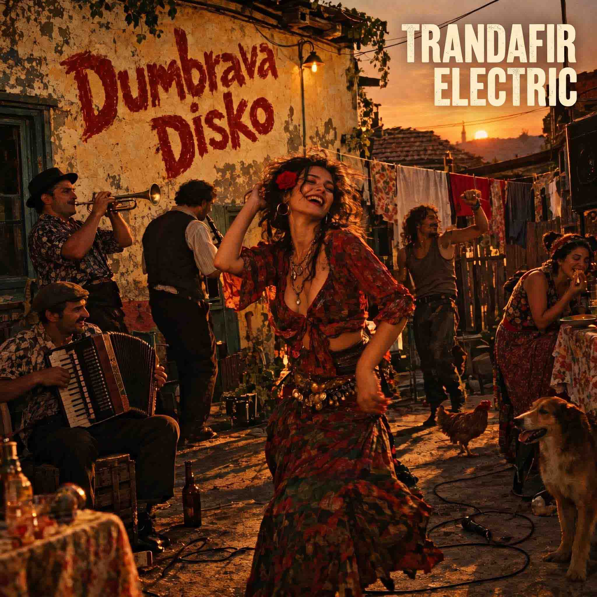
Dumbrava Disko
Balkan Club · Ethno-Disco
SOON
Dumbrava Disko — Trandafir Electric (1993). A cassette found at a flea market in Chișinău. Balkan brass, clarinet, accordion and gypsy violin are fused here with disco beat, dub and electronics.
SOON
Streaming links will be added closer to release.
- 01 Seară
- 02 Trandafir Electric
- 03 Străin în Orașul Meu
- 04 Cartierul Care Nu Doarme
- 05 Hora de Noapte
- 06 Am Venit Pe Jos
- 07 Inima de Tablă
- 08 Localnic Temporar
- 09 Zurgălău de Disko
- 10 Răsărit de Dub
> FOUND IN ARCHIVE: Digitized frames from the cassette, 1993.
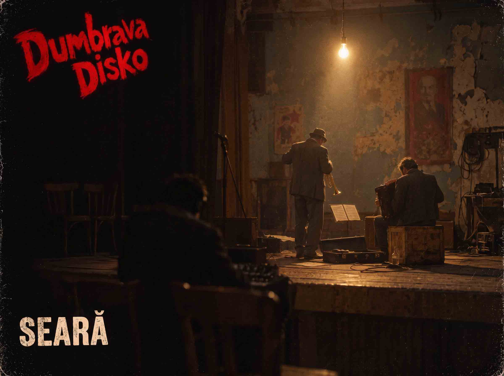
FIG. 01 — Seara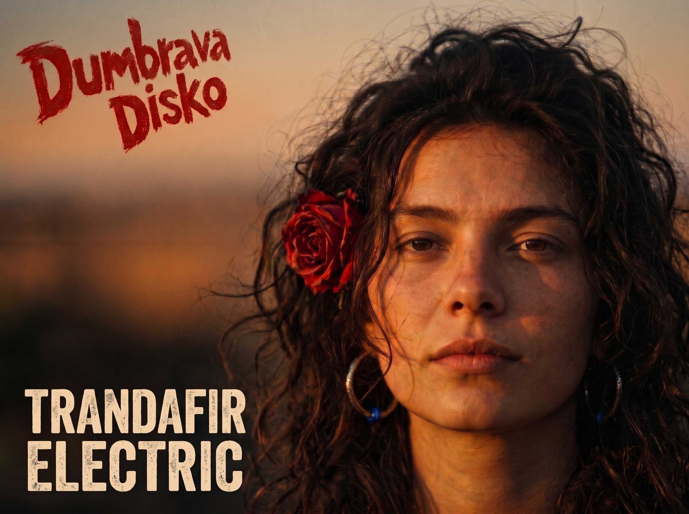
FIG. 02 — Trandafir Electric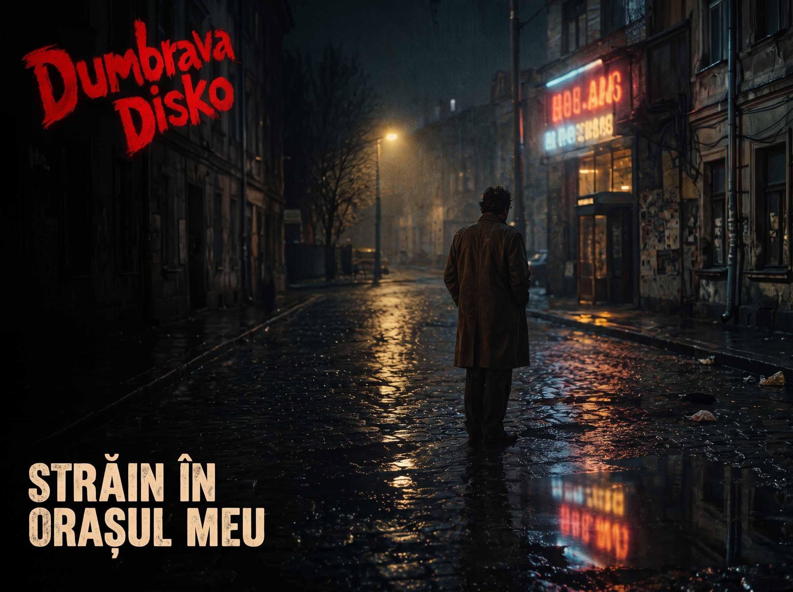
FIG. 03 — Străin în Orașul Meu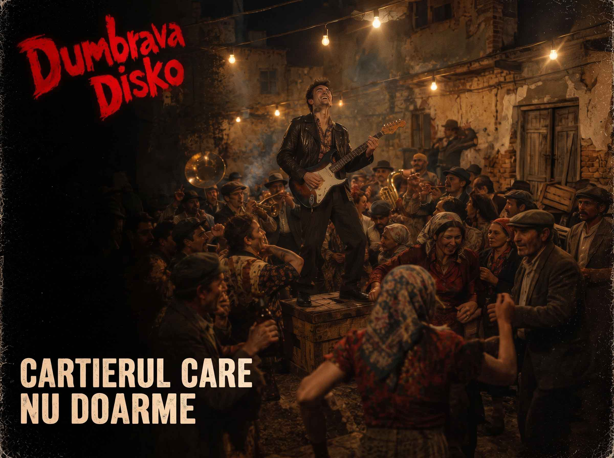
FIG. 04 — Cartierul Care Nu Doarme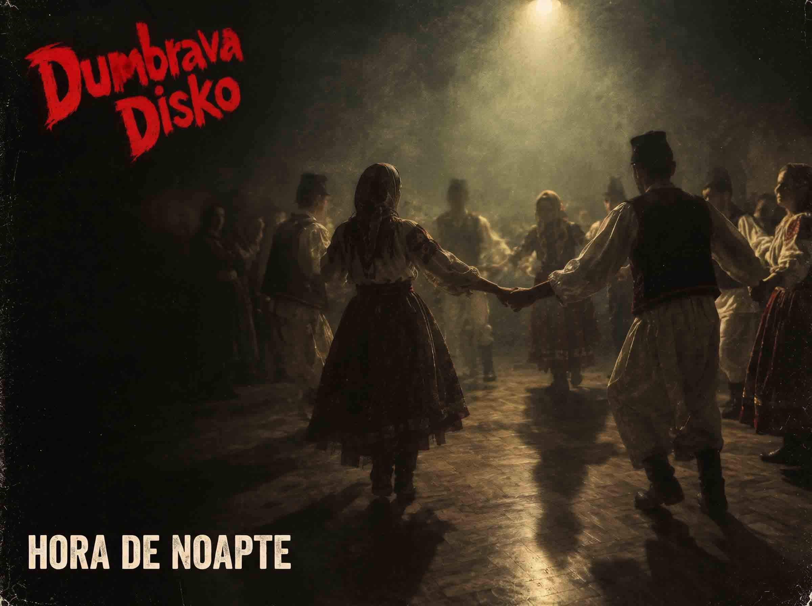
FIG. 05 — Hora de Noapte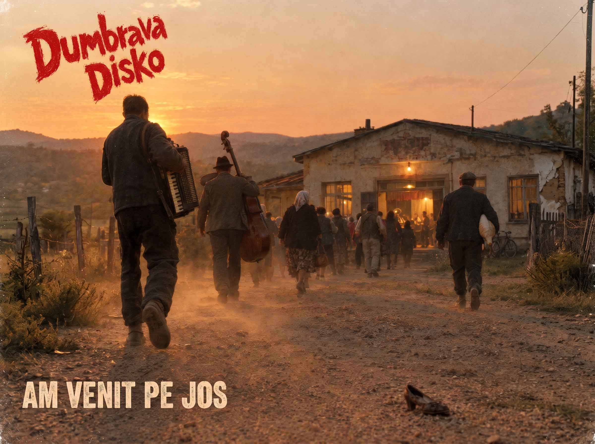
FIG. 06 — An Venit pe Jos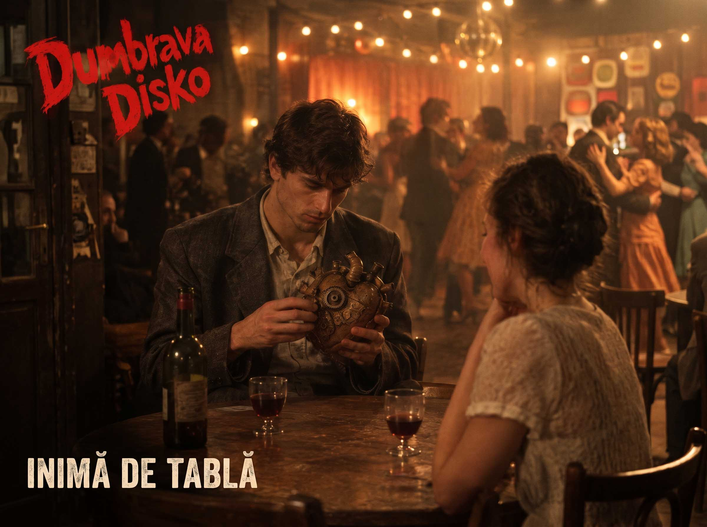
FIG. 07 — Inimă de Tablă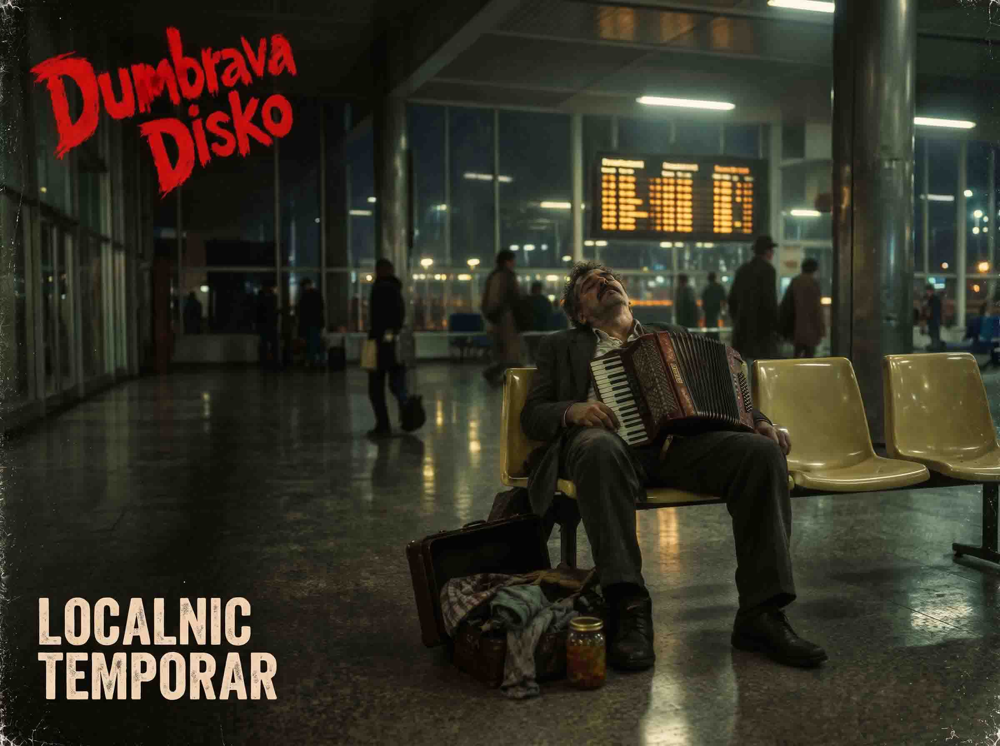
FIG. 08 — Localnic Temporar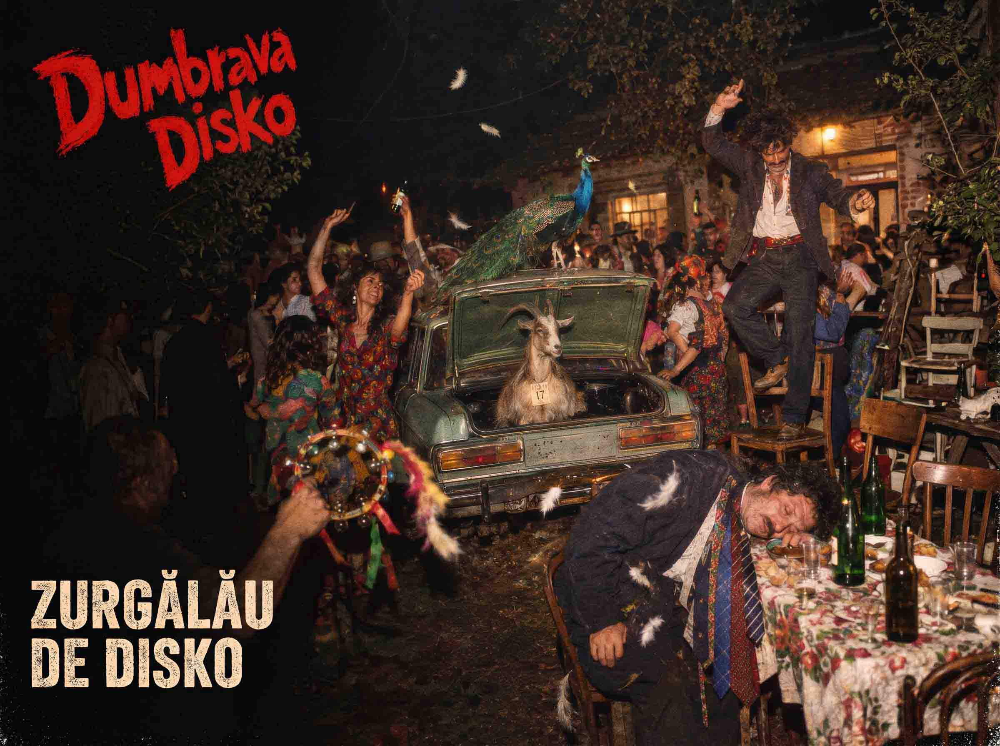
FIG. 09 — Zurgălău de Disko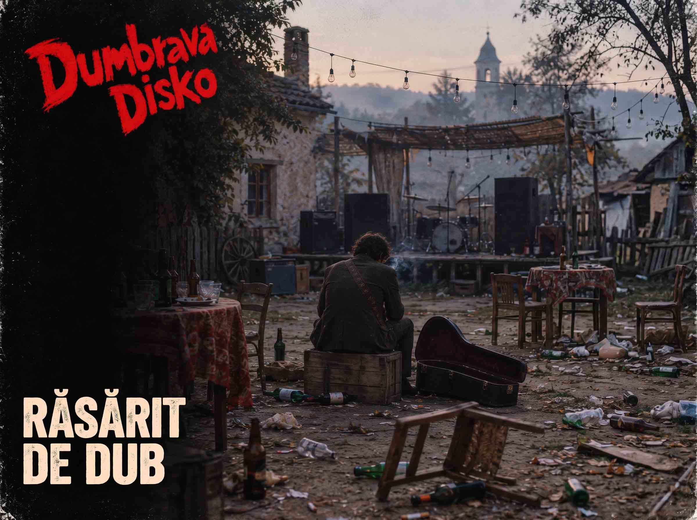
FIG. 10 — Răsărit de Dub> DECLASSIFIED DOCUMENTS: Archive fragments.
DUMBRAVA DISKO (ARCHIVE NOTE)
«Sometimes an archive doesn’t begin with an institute or a television center. Sometimes it begins with a box at a flea market. Chișinău, late nineties. At a street stall, between school notebooks, a broken tape recorder and someone’s old jacket, lay a cassette.»
NIGHT SESSION
«Judging by the recording, this was a concert program by a vocal-instrumental ensemble attached to one of Chișinău’s houses of culture. The tape preserves ten tracks recorded over a single night. It begins with a final rehearsal... It ends at sunrise, when the brass dissolves into echo.»
PARALLEL REALITY
«The music does not fit the usual frames of 1993. Balkan brass, clarinet, accordion and gypsy violin are fused here with disco beat, dub and electronics. Vocals are in Romanian, with shouts and choral inserts. It sounds as if it was recorded in a parallel reality where Balkan club music already existed in the early nineties.»
PRESERVED ARTIFACTS
«The material was digitized from the original cassette. The artifacts of the medium are preserved: tape hiss, slight wow/flutter, loss of high frequencies and characteristic saturation. Nothing was restored beyond what was necessary — only basic digital cleaning and mastering.»